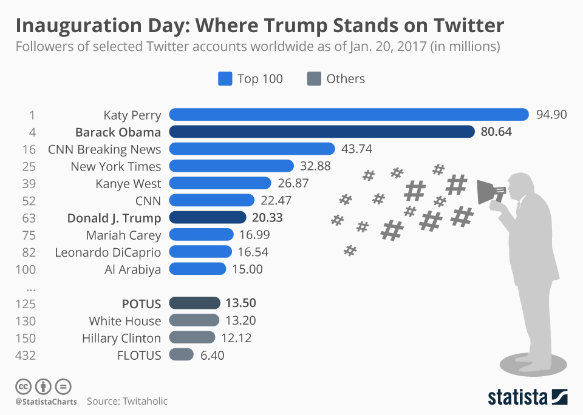
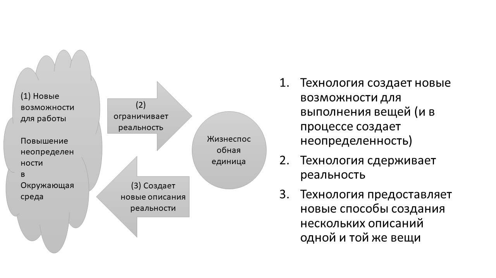
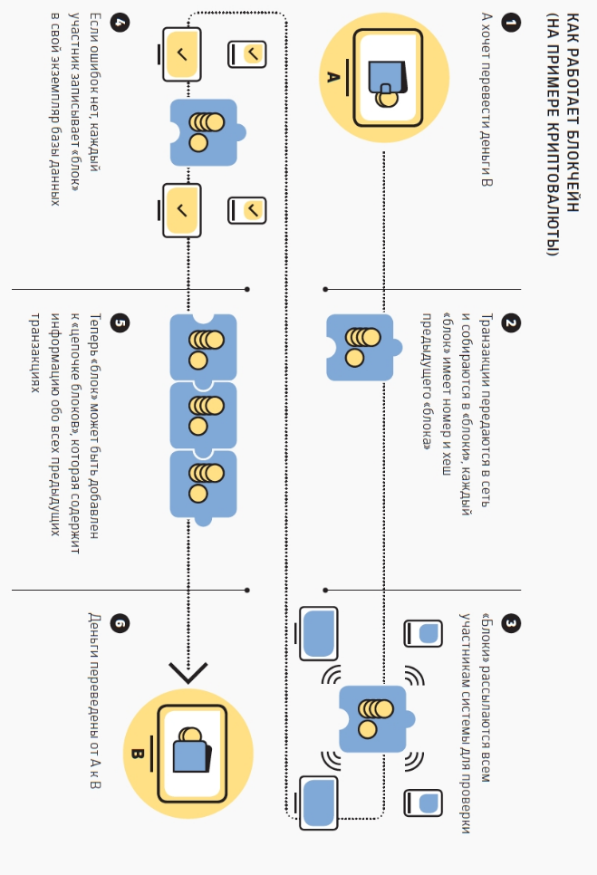
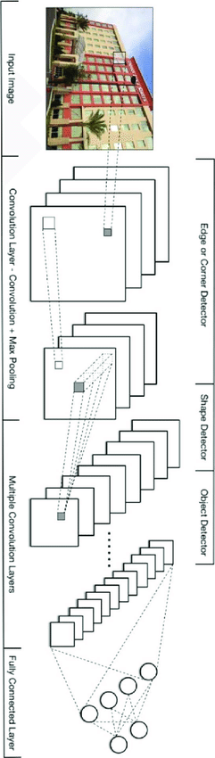

Technology¶
1. Why Technology?¶
KEY QUESTIONS:
How much time do you spend online?
How much time do you spend responding or browsing social media?
Could you live without your phone? or the internet?
WHY DOES THIS MATTER?
Technology has fundamentally changed the environment. You are the first generation who cannot remember a world without the internet.

Technology is transforming the world of employment. Many traditional jobs have been automated, and many of the traditional careers like law, teaching, business and management have been fundamentally and unrecognisably transformed by technology. Whatever career you choose for yourself - whether teaching, medicine, stock trading, even being an artist - it is highly likely that much of it will involve staring at screens and working with software.
Technology is always changing. It will always continue to change.
WHERE CAN I FIND OUT MORE? https://www.youtube.com/watch?v=WL0Dj50x2Gs
2. The Computer¶
KEY QUESTIONS:
What does the computer do to humans?
What has the computer done to society?
How can we live in harmony with computers in the future?
WHY DOES THIS MATTER?
Technology and computers allow new forms of control over humans.
Computers have created a new kind of human-machine system in society, where constraints can be very easily manipulated. We don’t fully understand how our new human-machine system is different from the social system of our parents.
Computers facilitate the manipulation of constraints. The way a computer screen presents changing possibilities for action as we type a phrase into a search engine, click on the hyperlinks which are presented to us, and then negotiate whatever new possibilities for action have been programmed into particular webpages, illustrates the way that constraints can be changed.
The human experience of this process reminds us of the human-machine system we are in: very real emotions arise in response to mechanical processes, not dissimilar to the fundamental emotional impact of physical constraints such as prison walls, one-way traffic systems, central heating or alarm clocks.
The word ‘com-puter’ comes from latin “com-putare”. ‘Putare’ means to comtemplate - so the computer is means of contemplating-with. With what kind of science might we investigate this, and with what kind of tools might we now organise ourselves?
WHERE CAN I FIND OUT MORE? https://www.youtube.com/watch?v=uKM9ZuQB3MA
3. The Internet as a ‘Lifeworld’¶
KEY QUESTIONS:
How has the computer affected what we think of as ‘real’?
How has the computer affected what we think of as ‘true’ or ‘false’?
How has the computer affected the way we feel?
WHY DOES THIS MATTER?
The concept of ‘Lifeworld’ is a way of talking about your everyday environment: everything that you think of as being the ‘real world’.
Each of us has different views of reality, and while some things like rocks and trees appear to be universal, we only think this because we observe others behaving in predictable ways with rocks and trees.
Something happens between us in the ‘real world’. The word ‘intersubjective’ describes what happens between us. Husserl and Schutz both referred to the concept of the ‘lifeworld’ as the context within which intersubjective engagement occurs.

The computer has transformed the Lifeworld of everyone. Have our lifeworlds become unstable? The one shared environment within which our expectations could be coordinated has changed into multiple lifeworlds within which individuals move in and out.
Even in face-to-face settings like lectures, students will often inhabit different lifeworlds as they explore social media or other online distractions.
WHERE CAN I FIND OUT MORE? https://www.youtube.com/watch?v=sUja1X-AMyo
5. Social Media Networks and Communication¶
KEY QUESTIONS
How does the number of people on social media change the way we choose to communicate?
How do we decide which media platform we will use to communicate?
WHY DOES THIS MATTER?
The diagram above illustrates the communication challenge of social media
A sender thinks of a message to send over an electronic connection which contains ‘noise’ of different kinds (for example, different understandings, different cultures, etc)
There are many (millions) of possible receivers
Among one or two of those receivers, somebody will understand the message and forward it on to an even larger audience.

6. Confirmation Bias and Trolling¶
KEY QUESTIONS
Why has social media seen an explosion in online abuse, misogyny, racism, trolling, stalking and fake news?
What is it about online communication that means that people feel free to say things which they wouldn’t say face-to-face?
WHY DOES THIS MATTER?
‘Confirmation bias’ is the name given to how communications are shaped by the communications of others.
Social media provides ways in which a very large audience can be manipulated with messages which many might disagree with, but which get passed around the internet.
‘Trolling’ is a form of abuse which relies on confirmation bias. Abusive or thoughtless messages are made because a community exists that will approve of them, but also such communities will also approve of the disrupting effects of those messages.
The selection of audience over utterance or multiple description can exacerbate political uncertainty to which institutional structures have to react.
Sometimes, the reaction of institutions like governments makes the uncertainty worse.
 WHERE CAN I FIND OUT MORE? https://www.youtube.com/watch?v=QRut1CWws0U
7. What does technology do?¶
KEY QUESTIONS
When somebody invents a new tool, how often does it provide a new way of doing something we could have done before?
How often does it provide a way of doing something which there was no way of doing before?
Why does one technology replace another? Why do some technologies fail to find users?
WHY DOES THIS MATTER?
Any new technology creates a new option for doing something. A long time ago, the only way of moving around would have been to walk, or to ride a horse. New options were created by railways, cars, planes and so on.
It’s the same with communicating: once upon a time, we would have to have been with the person we are talking to. New options were created by writing, printing, the telephone and the internet? 
Today we have bewildering choice: whether to write a letter, an email, a tweet, a text, a phone call?
Every new option for doing something creates more uncertainty in the decision to do something: Technology creates uncertainty
Technology can also limit our options for acting in certain ways: a locked gate or fence can constrain where humans can move in the world.
Computer systems today present users with ‘forms’ for them to fill in information like your name, address, phone number, password, etc. They constrain: Technology limits options.
Technology like computers do use algorithms to generate new ways of looking at the world which without of them we would not have access to.
Technology amplifies descriptions of the world.
The computer does all of these three things at once.
8. Technology and Feedback¶
KEY QUESTIONS
In what ways are you like a robot?
In what ways are you like a plant?
How do you adapt to your environment?
WHY DOES THIS MATTER?
The modern computer was developed in the 1940s as a consequence of technological innovations which arose from the Second World War.
One of the principles of the modern computer was the concept of feedback: where a system’s outputs are connected to its inputs. It was noted that systems with feedback exhibited ‘lifelike’ behaviour, and many scientists were fascinated by this lifelike behaviour right at the beginning of the computer’s evolution.
Today’s technologies of AI and Big Data rely on feedback. More importantly, most of the techniques and technologies of AI are not new, but were invented at the same time as the digital computer - in the late 1940s by some of the leading figures of cybernetics: Warren McCulloch, Norbert Wiener, John Von Neumann
What is new today is that we have wired every human being on the planet into an information network, so that the principles of intelligence and feedback imagined in the 1940s are now operating on human beings within this network.
Russian cybernetics and computing started after the death of Stalin, who had banned cybernetics because he thought it was anti-communist. People like Victor Glushkov were pioneers of computing in Russia.
WHERE CAN I FIND OUT MORE? https://www.youtube.com/watch?v=q_mtmmrGhEw
{width=”columnwidth”}
9. Decentralisation¶
KEY QUESTIONS
Does the internet have to be made of servers which store files accessed by users who type web addresses?
What happens when one of those servers (e.g. google) stops working?
Is there an alternative way of organising files where they exist everywhere, rather than a single place? What are the implications of organising things differently?
WHY DOES THIS MATTER?
When the internet was developed, the idea was that every machine should be connected to every other machine, with no central point of control.
The protocol through which the web works, Hyper-text Transport Protocol (http), relies on having servers which deliver documents.
As the web has evolved, it has reproduced the centralised structure of society where corporations and governments have high-profile websites. So instead of a free and open web where everyone is equal, we have a web dominated by a few corporations.
Web decentalisation focuses on how to reduce the burden on single servers by spreading files over many servers. It also looks at distributing internet access to parts of the world where building infrastructure isn’t viable like rural areas. It also seeks to address citizen worries about surveillance.
Blockchain is one form of decentralisation, but there also emerging technologies like the Inter-planetary file system (http://ipfs.io), and a few similar decentralising protocols like DAT (https://datproject.org/).
The hardware to support decentralisation is also developing. The Gotenna device (see https://www.gotenna.com/pages/mesh) is a small radio repeater which carries a signal for 4 miles, and can easily form a mesh network with other Gotenna recievers in the neighbourhood.
WHERE CAN I FIND OUT MORE? https://www.youtube.com/watch?v=X2u29w4ejPQ
10. Blockchain and Bitcoin¶
KEY QUESTIONS
Is a currency possible without a central bank?
If an institution like a bank can be replaced with technology, what about other institutions like universities?
If institutions provide trust in a currency, how does technology establish an equal degree of trust?
WHY DOES THIS MATTER?
One of the functions of institutions like banks, universities or hospitals is to provide trust in their services. People use the institutions because they have trust in the honesty of what the institution does.
A banknote, for example, usually contains a ‘promise’ by the bank to pay the sum which is written on the paper BitCoin provides a way in which trust can be established simply with an algorithm, rather than requiring an institution. 
Equally important is that the BitCoin algorithm is a distributed technology called a Blockchain which doesn’t store details of transactions on any single server.
Instead, the Blockchain algorithm is a “chain of digital signatures” which act as an open and transparent ledger of transactions in the Bitcoin currency [@nakamoto_bitcoin:_nodate]
The blockchain has two principal innovations which have ensured that the ledger is trusted. Firstly, the entire blockchain - the list of all transactions - is distributed and duplicated throughout the internet. Secondly, the veracity of the blockchain ledger is assured by a process called ‘mining’. This is a data-intensive process which aims to identify any anomalies in the ledger. Mining serves a dual purpose: whilst it ensures the ledger is accurate, it also rewards those who find inconsistencies with the creation of new Bitcoins, thus tying the mechanism of verification with the control of the money supply (a function normally carried out by a central bank) [@vigna_cryptocurrency:_2016]
11. Artificial Intelligence¶
KEY QUESTIONS
How does Google translate work?
What might AI be able to do in the future?
What will it not be able to do?
WHY DOES THIS MATTER?
Simple machines with feedback can produce life-like phenomena. For a long time, people have asked ‘Can we build an artificial brain?’
In the 1950s and 60s, cybernetics was the emerging discipline within which these developments could be considered together.
What we now call ‘machine learning’ also belongs to this period. Machine learning has its roots in the work of one of the pioneers of early cybernetics, Warren McCulloch. McCulloch saw that the neural structures of the brain were multiple interconnections. In describing the logic of this structure, McCulloch coined the term ‘heterarchy’.
Neural networks have many interconnected nodes and these can be trained to identify the different characteristics of “a thing to be recognised”. For example, if we want a neural network to recognise a picture of a rabbit, the network is exposed to many pictures of rabbits (a training set). With enough pictures, it learns the characteristics of ‘rabbit-ness’ from these so that new images of rabbits can be successfully identified.
Google Translate works in a similar way: it has millions of examples of text in different languages which it feeds into its neural network. That learns how to convert one to the other. It also learns from the preferences of users when they use it.
Machine learning depends on having thousands of items to train it. If thousands of items are not available, machine learning is unlikely to be very good.
WHERE CAN I FIND OUT MORE?

Google has an open source machine learning project called TensorFlow, with many examples of machine learning: https://www.tensorflow.org/
There are some impressive demos of machine learning in the arts as part of the Magenta project: https://magenta.tensorflow.org/demos
12. Surveillance and Big Data¶
KEY QUESTIONS
How much does Facebook, VK, Whatsapp or your internet service provider know about you?
Is it a problem that technology companies know so much about you?
Is it a problem that governments might know so much about you?
WHY DOES THIS MATTER?
Everything we do online records data which is sent back to the providers of online services we use.
Providers of online services adapt the service they provide to us based on what they know about us: so if you shop on amazon for something, you will receive adverts for that thing in other web pages.

This recording of personal data is unprecedented in human history: it is not the ‘connectedness’ of people that is new with the internet (we have always been interconnected as human beings); it is the capacity for the strategic organisation, recall and manipulation of data about humans to then change the behaviour of humans.
The collection of personal data is related to the centralisation of the internet. If the internet was decentralised, then personal data could be stored under the control of the individual who creates it.
Individuals could then sell their own data to corporations if they wished.
The Cambridge Analytica scandal recently showed how personal data is being used by large corporations for commercial and political advantages.
WHERE CAN I FIND OUT MORE? https://www.youtube.com/watch?v=HF7FpoolZDQ
13. Attenuations¶
KEY QUESTIONS
What would you rather share: your Facebook/VK password or your toothbrush?
In what ways do computers present you with barriers to doing things?
WHY DOES THIS MATTER?
Technology forces us to behave in certain ways, demanding use of electronic forms, passwords, user permissions, firewalls and so on.
The earliest example of the form was developed during the first world war. Form A2042 was the name given to the ‘Field Service Post Card’, upon which soldiers could send brief messages home by crossing-out the options which did not apply. Paul Fussell claims it was
‘the progenitor of of all modern forms on which you fill in things or cross out things or check off things, from police traffic summonses to “questionnaires” and income-tax blanks.’ [@fussell_great_2013]
The Field Service Post-Card is an attenuator which reinforces control by a central authority or hierarchy (in this case, the British army). The form’s restricted structure prevented soldiers saying too much.
Hierarchies maintain themselves by attenuating the flow of information between themselves and their environment.
Today’s computer forms do more than attenuate the communication of individuals. Computer tools also amplify the patterns of behaviour gained by capturing many people engaging with the form. Modern computer technology can dynamically adapt the constraints within which users engage with the system.
social media platforms present content to users which in a way where the behaviour of users might be anticipated.
WHERE CAN I FIND OUT MORE
4. Social Media¶
KEY QUESTIONS
What is the difference between talking on a social media forum and talking to someone face-to-face?
Who do you talk to when you post on a social media forum?
How do you know that you have really communicated with someone on social media?
How do you know you have really communicated with someone face-to-face?
WHY DOES THIS MATTER?
Imagine a private conversation between you and a friend: the words one of you says are only heard by the other person, and their words are only heard by you. Of course, they might tell others what you said, but that would be another private conversation.
Social media expands the audience of any potential communication, so you’re no longer talking to one person, but to potentially millions.
When you talk face-to-face, in order to communicate, you must convey the meaning of what you want to say. Sometimes you have to choose your words carefully. You can judge whether the other person understands by how they react to what you say. If they don’t react as you expected, do you try and say the same thing in a different way?
Is your communication successful if the way the person you are talking to talks and behaves in a way you expect them to? This process was theorised by a sociologist called Talcott Parsons, who called it ‘Double Contingency’[@parsons_social_2012; @luhmann_social_1996]
Because social media communicates with thousands of people, your communication could be successful with somebody among those thousands of people even if you don’t adjust how you say it.
That means that any social media communication may potentially be successful with somebody within a networked set of possible respondents.
WHERE CAN I FIND OUT MORE? https://tinyurl.com/kw8kk8q